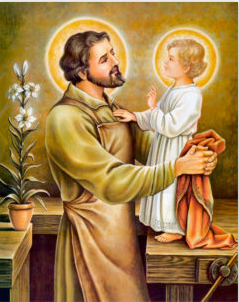

Bem-vindo(a)
Você está autenticado com segurança. Use o menu para acessar informações da sua paróquia.

Seu Cadastro
Dados do seu perfil na área logada.
- Primeiro nome
- Sobrenome
- Celular
- Gênero
Informações da Paróquia
Dados institucionais para consulta rápida.
- Paróquia
- Pároco
- Endereço
- Telefone
- Horário de Missas
Contato
Paróquia: veja Informações da Paróquia acima. Cúria Diocesana e setores: página de contato.